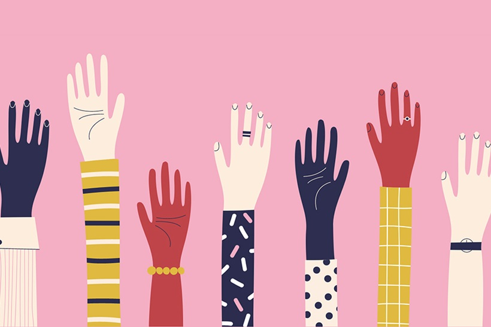

Welcome! We are Aarnavi Paduru, Shivani Potnuru, and Eva Nguyen, three students in LIS 500: Code & Power at UW–Madison. This site is our space to explore how race, gender, and class shape the technology we use every day. Browse our pages to learn more about who we are, explore the topic of implicit bias, and discover who our tech heroes are.
